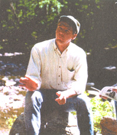

Building A Better Forest
October/November 1999
MOTHER caught up with U.S. Forest Chief Mike Dombeck to talk about national parks, alternative building and the future of our land.
MEN: Do you think there should be recreational limits in national forests and parks?
MD: All of our activities need to be within the boundary of long-term sustainability. We must work within the limits of the land if we want to realize the benefits generation after generation.
Do you think there should be a shift toward a more universally simple lifestyle?
Well, a simple lifestyle has always been one of my dreams. I do think that we should be as sufficient as we possibly can. And just as we need to support a land ethic, we need to help people understand why our land ethic is an important aspect of living by the land.
What are your thoughts on alternative home building?
I think we ought to continue to research technology to see different ways of building and to look at the progress we've made so far; a lot of times we don't give ourselves credit for the progress we have been making. The fact is we're getting two-and-a-half times the use out of the same volume of wood today as we did at the turn of the century. This is [a result of] everything from our efficiency in milling operations to the utilization of a smaller diameter of wood. Oftentimes, use of substitute material for wood-whether it's steel, aluminum or plastic-consumes far more energy in the production process and has a more adverse impact on the environment than wood.
Would you like to continue the marked decrease of the government's clear-cutting as a way to harvest trees?
The fact is, we're doing about 70% less clear-cutting today than we did in the late 1980s We need to, I think, realize that nature has always been a mosaic of ecological states. Where I'm getting to is I think we need to look at our landscape and decide what it is that we want; what is it, and how do we get there. Apply the science and a whole variety of approaches-maybe thinning, maybe prescribed fire, maybe harvest salvage or more likely a combination of these-and continually evaluate our goals. I think there is a place for clear-cutting on a much smaller scale.
What's your favorite wildlife/forest area?
Obviously, I'm biased. I think I'm the only chief who grew up in i national forest. But the thing is, I love the woods and I have yet to travel to a national forest that that's out I didn't just absolutely fall in love with. The more I get to see the beauty that's out there, the more appreciation I have for the diversity that's out there.
What's your favorite place to fish?
I'm not fussy when it comes to where I can fish. Do you know that 75% of the recreation that occurs in the outdoors occurs within a half-mile of water? As we deal with the increasing recreation values,one of the things I always like to ask myself is: of value will we be? And by "we" I mean [the national forest. What will be the importance of the national forests to the American public in the coining years.?
 |
|
 |